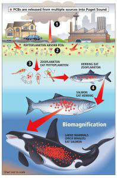
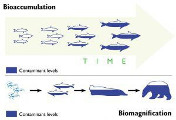

Toxiens In Nature And How They Affect Us
What are natural toxins?
Natural toxins are toxic compounds that are naturally produced by living organisms. These toxins are not harmful to the organisms themselves but they may be toxic to other creatures, including humans, when eaten. These chemical compounds have diverse structures and differ in biological function and toxicity. Some toxins are produced by plants as a natural defense mechanism against predators, insects or microorganisms, or as consequence of infestation with microorganisms, such as mould, in response to climate stress (such as drought or extreme humidity). Other sources of natural toxins are microscopic algae and plankton in oceans or sometimes in lakes that produce chemical compounds that are toxic to humans but not to fish or shellfish that eat these toxin-producing organisms. When people eat fish or shellfish that contain these toxins, illness can rapidly follow. Some of the most commonly found natural toxins that can pose a risk to our health are described below
Key facts
- Some natural toxins can be formed in food as defense mechanisms of plants, through their infestation with toxin-producing mould, or through ingestion by animals of toxin-producing microorganisms.
- Natural toxins can cause a variety of adverse health effects and pose a serious health threat to both humans and livestock. Some of these toxins are extremely potent.
- Adverse health effects can be acute poisoning ranging from allergic reactions to severe stomachache and diarrhoea, and even death.
- Long-term health consequences include effects on the immune, reproductive or nervous systems, and also cancer.
- nternational standards and codes of practice to limit exposure to natural toxins from certain foods are established by the Codex Alimentarius Commission based on JECFA assessments.
- A scientific expert committee jointly convened by WHO and the Food and Agriculture Organization of the United Nations (FAO) _ called JECFA _ is the international body responsible for evaluating the health risk from natural toxins in food.
How do toxices get into our food?
Bioaccumulation and biomagnification are two different processes that often occur in tandem with one another. Bioaccumulation is the process by which toxins enter the food web by building up in individual organisms, while biomagnification is the process by which toxins are passed from one trophic level to the next (and thereby increase in concentration) within a food web.
To understand How this process work we need to understand What is OPO ?
Synthetic (man-made) chemicals called Persistent Organic Pollutants, or POPs, are of primary concern when looking at bioaccumulation and biomagnification. These chemicals do not easily break down in the environment and can build up in the fatty tissues of living organisms. Some examples of POPs you may have heard of include DDT (an insecticide that was used extensively post-WWII) and PCBs (flame retardants). Although the production of these chemicals was banned during the 1970s and 1980s, they can still be found in the oceans as well as the tissues of many marine animals because of their ability to (1.) persist in the environment for long periods of time, (2.) move within water, and (3.) dissolve into the fatty tissues of living organisms. For all of these reasons, POPs like DDT and PCBs are especially good at bioaccumulating and biomagnifying.
Now how does it work ?
Bioaccumulation occurs at the base of a food web, usually within primary producers like phytoplankton. These microscopic photosynthetic organisms absorb POPs directly from the seawater and accumulate them in their bodies over time. The toxins build up in their tissues because they are absorbed from the water at a rate faster than they can be metabolized.
Biomagnification occurs when slightly larger organisms called zooplankton feed upon the contaminated phytoplankton and in turn absorb POPs into their own tissues at a higher concentration. The more contaminated phytoplankton a zooplankton eats, the more pollutants it will have in its body. In other words, the POPs can be passed from producer to consumer (to consumer, to consumer, and so on…) Biomagnification can continue all the way up the food web or chain. Because the amounts of POPs become more and more concentrated at each trophic level, some of the ocean’s apex predators are at risk of gaining potentially fatal levels of POPs within their bodies.
One large apex predator that is heavily impacted by the bioaccumulation and biomagnification of POPs is the orca. Researchers have found extremely high levels of PCBs within the blubber of Arctic orcas, making them “the most toxic animal in the Arctic.” Additionally, scientists in Japan have found that mother orcas are passing these contaminants to their young through their milk, which has high fat content. PCBs are known to cause problems with reproduction, and studies are currently being conducted to see if and how POPs are impacting orcas in other ways.
How can we protect our self ?
protecting our selves start with protecting the inveroment
Reduce your use
- Buy only by what you need.
- Always read the label and follow the instructions
- Use only what you need: one squirt (about 8 mL) of dishwashing liquid for a standard sink full of dishes. Remember that it all adds up down the drain – using less can have a big impact on the amount of chemicals that reach the environment.
Wise chemical waste disposal
- Check the label on your chemical. It will tell you whether the chemical is safe to put in your household rubbish or if it needs to go into landfill or be disposed of in a managed way. If you are unsure, contact your council for advice.
- Keep flammable, corrosive, or toxic chemicals out of your household rubbish.
- Don't pour chemicals down stormwater drains. They can get into waterways and harm marine life.
- Wash your car on the lawn so the detergent soaks into the lawn rather than going down the stormwater drain.
- Wash paintbrushes on the lawn and let the leftover paint dry in the tin before you dispose of it.
- You can donate or recycle leftover paint: check with your local paint shop.
- Some shops accept batteries and other chemical products for recycling and disposal. Ask at the shop you bought the product from.
How can I minimize the health risk from natural toxins?
When it comes to natural toxins it is important to note that they can be present in a variety of different crops and foodstuff. In a usual balanced, healthy diet, the levels of natural toxins are well below the threshold for acute and chronic toxicity.
To minimize the health risk from natural toxins in food, people are advised to
- not assume that if something is 'natural' it is automatically safe;
- throw away bruised, damaged or discoloured food, and in particular mouldy foods;
- throw away any food that does not smell or taste fresh, or has an unusual taste; and only eat mushrooms or other wild plants that have definitively been identified as nonpoisonous.